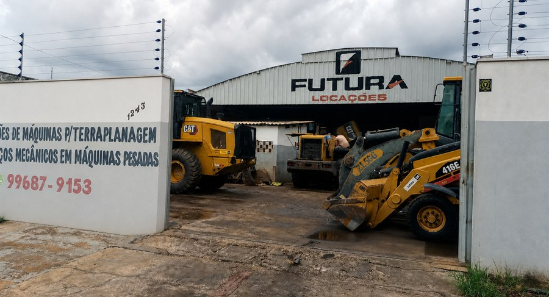
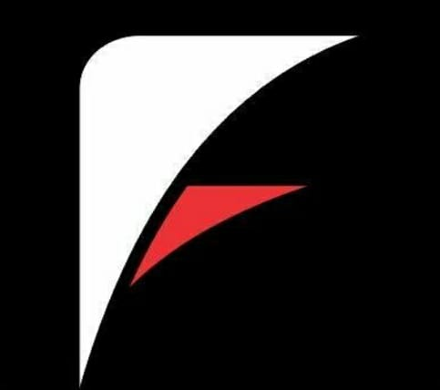
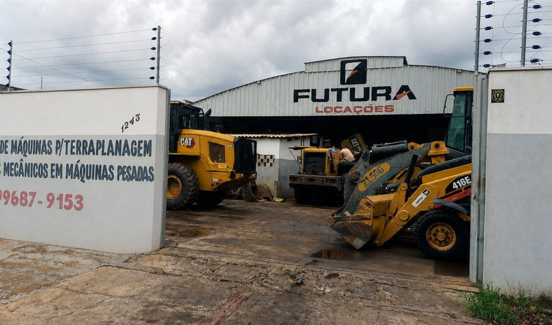
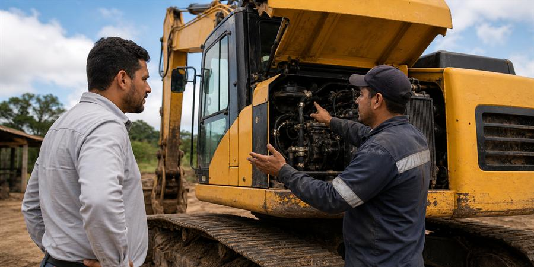
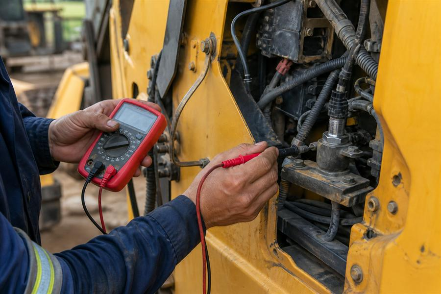
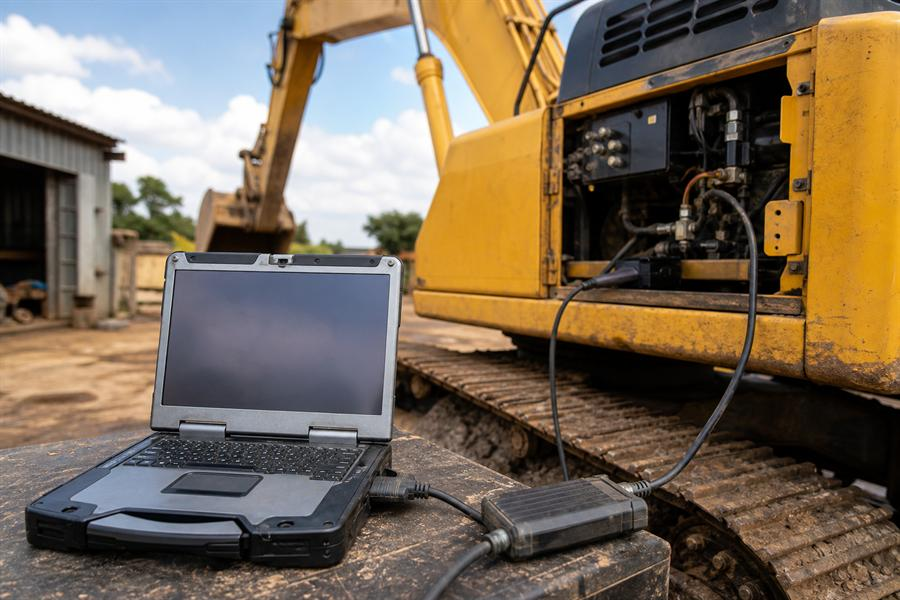

01Manutenção preventiva
Inspeções e ajustes para evitar paradas.

Futura Serviços Mecânicos (66) 9 9687-9153Mecânica pesada em Rondonópolis - MT
Manutenção mecânica, elétrica, eletrônica e diagnóstico computadorizado para sua operação não ficar parada.
Serviços

01Inspeções e ajustes para evitar paradas.

02Reparo em máquinas pesadas do campo, obra e transporte.

03Suporte direto para resolver sem enrolação.

04Chicotes, sensores, módulos e comandos.

05Leitura de falhas pelo computador.
Por que chamar a Futura
A Futura trabalha com foco no que importa para quem depende da máquina: resposta rápida, serviço bem feito e comunicação clara do orçamento até a entrega.
Contato
Fale agora com a Futura Serviços Mecânicos e reduza o tempo da sua máquina parada.